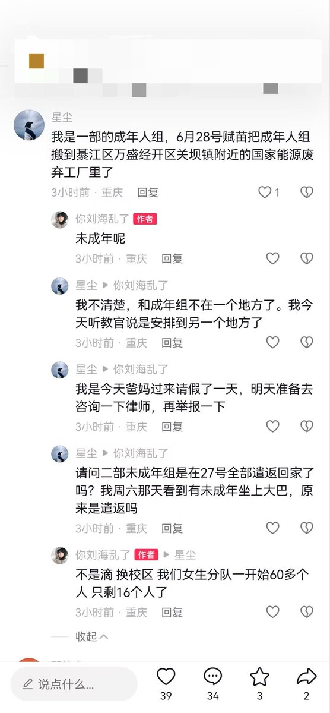
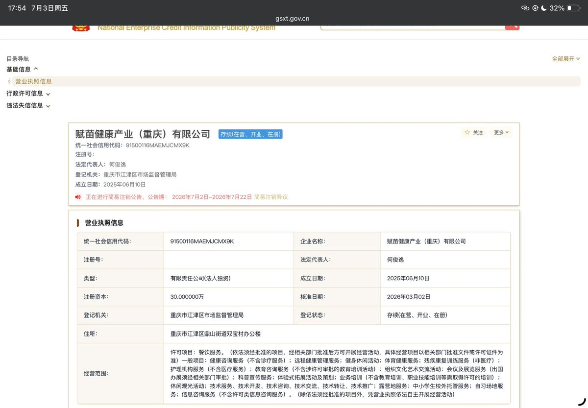
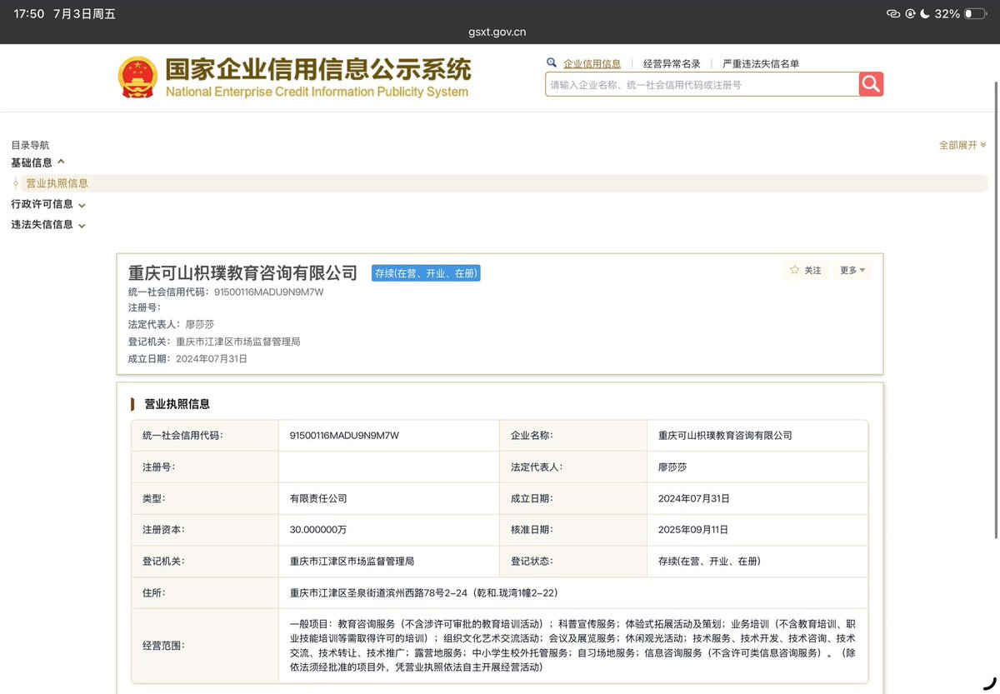
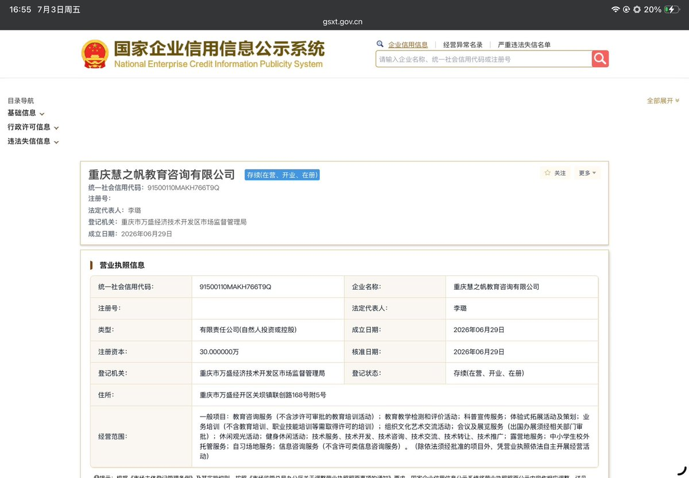
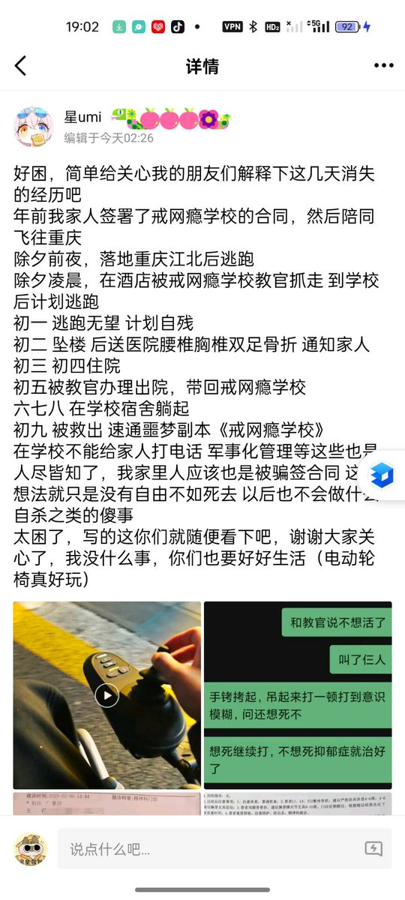
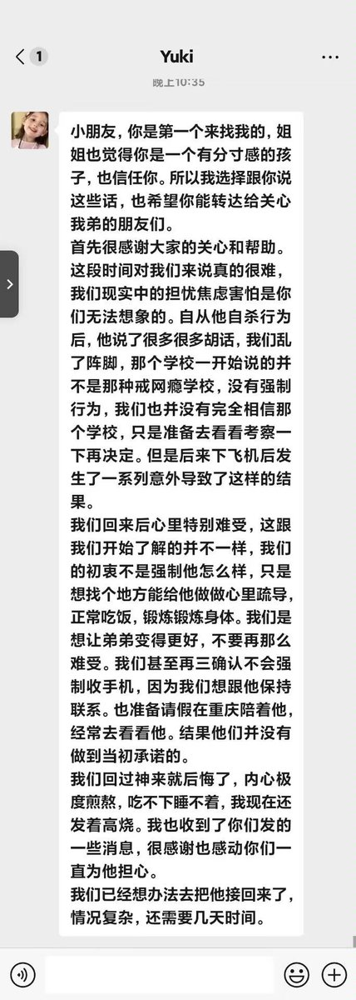
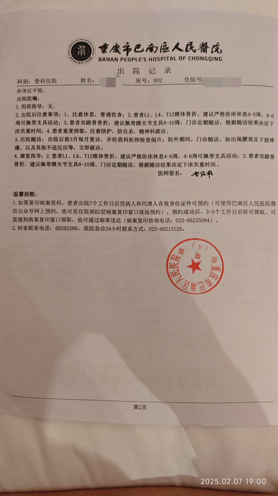

鸢尾Iris
@Linyue7523
据受害者提供的消息
重庆可山枳璞教育在2025年7月场地到期后转为赋苗健康产业（重庆）有限公司/赋苗健康产业（重庆）有限公司，在媒体报道后停业并在专案组的眼下转移至重庆慧之帆教育咨询有限公司
目前持续寻找赋苗教育或校长为廖莎莎，张宏，何俊逸的戒网瘾机构受害者中
志愿者持续跟进案件中







鸢尾Iris
@Linyue7523
2025年1月28日凌晨被送入
重庆枳璞教育的跨性别女性@ling2589906742，其家长在我与牧鸢提供的矫正机构内卧底视频打动，决定将受害者接回，她与今日凌晨被放出机构并成功的与我们取得联系，她仅仅在学校待了九天就被打成了骨折与脑缺氧，并且在受害者骨折之后还在继续，受害者已离开学校，我们打算维权 https://t.co/VTQ0mbG6UW